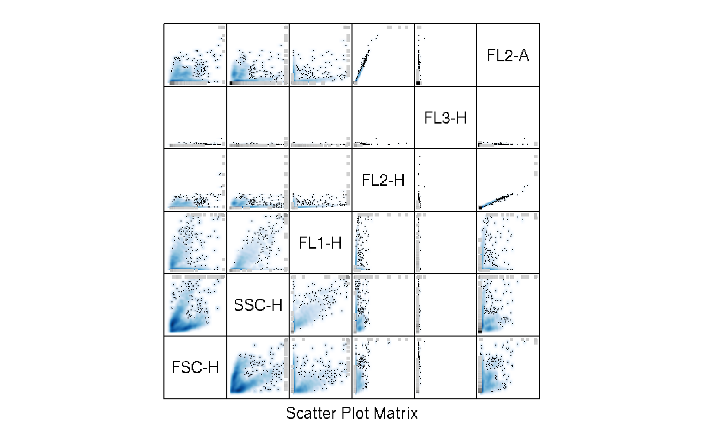
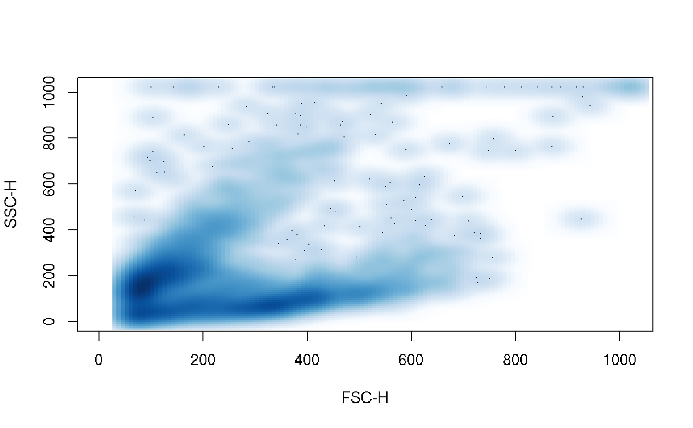
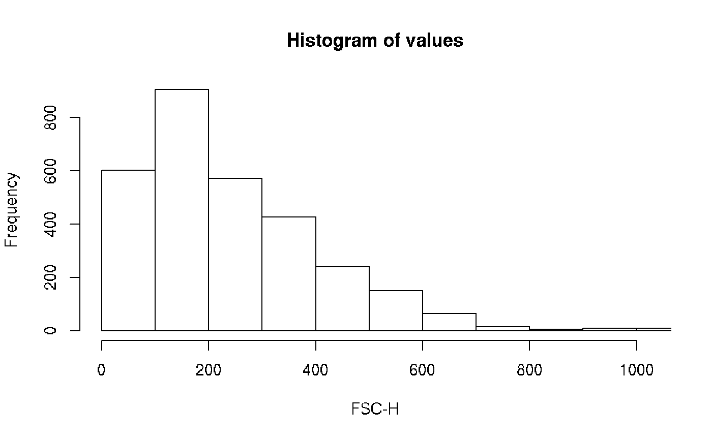
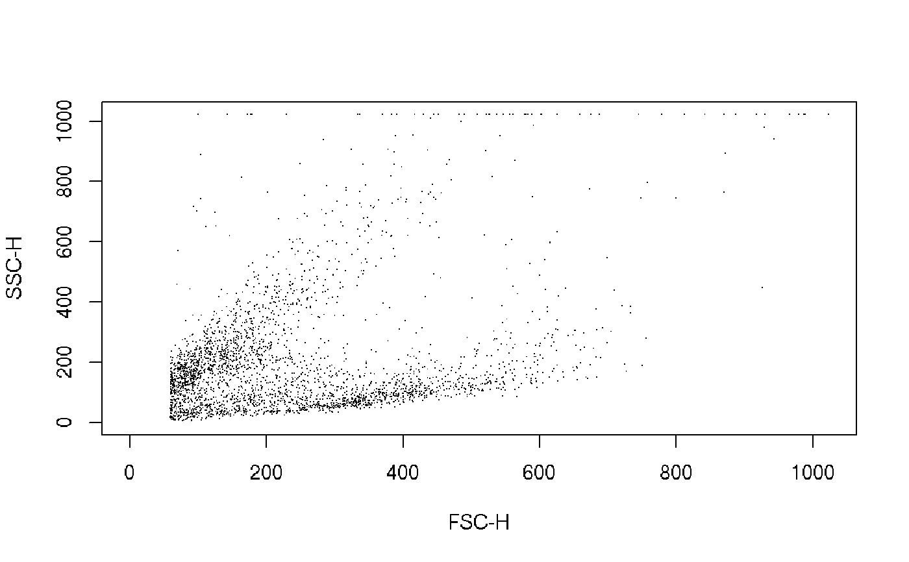
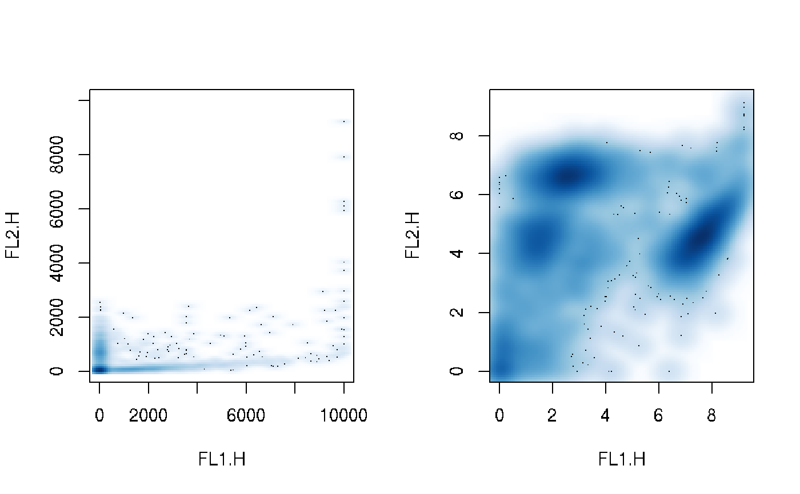

flowFrame-class.RdThis class represents the data contained in a FCS file or similar data structure. There are three parts of the data:
a numeric matrix of the raw measurement values with rows=events and columns=parameters
annotation for the parameters (e.g., the measurement channels, stains, dynamic range)
additional annotation provided through keywords in the FCS file
Objects of class flowFrame can be used to hold arbitrary data of cell
populations, acquired in flow-cytometry.
FCS is the Data File Standard for Flow Cytometry, the current version is FCS 3.0. See the vignette of this package for additional information on using the object system for handling of flow-cytometry data.
exprsObject of class matrix containing the
measured intensities. Rows correspond to cells, columns to the
different measurement channels. The colnames attribute of
the matrix is supposed to hold the names or identifiers for the
channels. The rownames attribute would usually not be set.
parametersAn
AnnotatedDataFrame
containing information about each column of the
flowFrame. This will generally be filled in by
read.FCS or similar functions using data from the
FCS keywords describing the parameters.
descriptionA list containing the meta data included in the FCS file.
Objects can be created using
new("flowFrame",
exprs = ...., Object of class matrix
parameters = ...., Object of class AnnotatedDataFrame
description
= ...., Object of class list
)
or the constructor flowFrame, with mandatory arguments exprs
and optional arguments parameters and description.
flowFrame(exprs, parameters, description=list())
To create a flowFrame directly from an FCS file, use
function read.FCS. This is the recommended and
safest way of object creation, since read.FCS will perform basic data
quality checks upon import. Unless you know exactly what you are doing,
creating objects using new or the constructor is discouraged.
There are separate documentation pages for most of the methods listed here which should be consulted for more details.
Subsetting. Returns an object of class flowFrame.
The subsetting is applied to the exprs slot, while the
description slot is unchanged. The syntax for subsetting is
similar to that of data.frames. In
addition to the usual index vectors (integer and logical by
position, character by parameter names), flowFrames can be
subset via filterResult and
filter objects. Usage: flowFrame[i,j] flowFrame[filter,] flowFrame[filterResult,] Note that the value of argument drop is ignored when
subsetting flowFrames.
Subsetting by channel name. This is similar to subsetting
of columns of data.frames, i.e.,
frame$FSC.H is equivalent to frame[, "FSC.H"]. Note
that column names may have to be quoted if they are no valid R
symbols (e.g. frame$"FSC-H").
Extract or replace the raw data
intensities. The replacement value must be a numeric matrix with
colnames matching the parameter definitions. Implicit subsetting
is allowed (i.e. less columns in the replacement value compared to
the original flowFrame, but all have to be defined there). Usage: exprs(flowFrame) exprs(flowFrame) <- value
Show first/last elements of the raw data matrix Usage: head(flowFrame) tail(flowFrame)
Extract the whole list
of annotation keywords and their corresponding values or replace values by keyword
(description<- is equivalent to keyword<-). Usually one would only be
interested in a subset of keywords, in which case the keyword method is
more appropriate. The optional hideInternal parameter can
be used to exclude internal FCS parameters starting
with $. Usage: description(flowFrame) description(flowFrame) <- value
Extract ore replace one or more entries
from the description slot by keyword. Methods are defined
for character vectors (select a keyword by name), functions
(select a keyword by evaluating a function on their content) and
for lists (a combination of the above). See keyword
for details. Usage: keyword(flowFrame) keyword(flowFrame, character) keyword(flowFrame, list) keyword(flowFrame) <- list(value)
Extract parameters and return an
object of class
AnnotatedDataFrame,
or replace such an object. To access the actual parameter
annotation, use pData(parameters(frame)). Replacement is
only valid with
AnnotatedDataFrames
containing all varLabels name, desc, range,
minRange and maxRange, and matching entries in the
name column to the colnames of the exprs matrix. See
parameters for more details. Usage: parameters(flowFrame) parameters(flowFrame) <- value
Display details about the flowFrame object.
Return descriptive statistical summary (min, max,
mean and quantile) for each channel Usage: summary(flowFrame)
Basic plots for flowFrame objects. If the object
has only a single parameter this produces a
histogram. For exactly two parameters
we plot a bivariate density map (see
smoothScatter
and for more than two parameters we produce a simple
splom plot. To select specific parameters
from a flowFrame for plotting, either subset the object or
specify the parameters as a character vector in the second
argument to plot. The smooth parameters lets you toggle
between density-type
smoothScatter
plots and regular scatterplots. For far more sophisticated
plotting of flow cytometry data, see the
flowViz package. Usage: plot(flowFrame, ...) plot(flowFrame, character, ...) plot(flowFrame, smooth=FALSE, ...)
Extract the dimensions of the data matrix. Usage: ncol(flowFrame) nrow(flowFrame) dim(flowFrame)
. colnames and
featureNames are synonyms, they extract parameter names (i.e., the
colnames of the data matrix) .
For colnames there is
also a replacement method. This will update the name column
in the parameters slot as well. Usage: featureNames(flowFrame) colnames(flowFrame) colnames(flowFrame) <- value
Extract pretty formated names of the parameters
including parameter descriptions. Usage: names(flowFrame)
Extract GUID of a flowFrame. Returns the
file name if no GUID is available. See identifier
for details. Usage: identifier(flowFrame)
Get instrument or actual data range of the flowFame. Note that
instrument dynamic range is not necessarily the same as the range of the actual data values, but
the theoretical range of values the measurement instrument was
able to capture. The values of the dynamic range will be
transformed when using the transformation methods forflowFrames. parameters: x: flowFrame object. type: Range type. either "instrument" or "data". Default is "instrument" Usage: range(x, type = "data")
Apply functions over rows or columns of
the data matrix. These are convenience methods. See
each_col for details. Usage: each_row(flowFrame, function, ...) each_col(flowFrame, function, ...)
Apply a transformation function on a
flowFrame object. This uses R's
transform function by treating the
flowFrame like a regular data.frame. flowCore
provides an additional inline mechanism for transformations (see
%on%) which is strictly more limited
than the out-of-line transformation described here. Usage: transform(flowFrame, translist, ...)
Apply a filter object on a
flowFrame object. This returns an object of class
filterResult, which could then be used for
subsetting of the data or to calculate summary statistics. See
filter for details. Usage: filter(flowFrame, filter)
Split flowFrame object according to a
filter, a filterResult or a
factor. For most types of filters, an optional
flowSet=TRUE parameter will create a
flowSet rather than a simple list. See
split for details. Usage: split(flowFrame, filter, flowSet=FALSE, ...) split(flowFrame, filterResult, flowSet=FALSE, ...) split(flowFrame, factor, flowSet=FALSE, ...)
Subset a flowFrame according to a filter
or a logical vector. The same can be done using the standard
subsetting operator with a filter, filterResult, or
a logical vector as first argument. Usage: Subset(flowFrame, filter) Subset(flowFrame, logical)
Expand a flowFrame by the data in a
numeric matrix of the same length. The matrix must
have column names different from those of the
flowFrame. The additional method for numerics only
raises a useful error message. Usage: cbind2(flowFrame, matrix) cbind2(flowFrame, numeric)
Apply a compensation matrix (or a
compensation object) on a flowFrame
object. This returns a compensated flowFrame. Usage: compensate(flowFrame, matrix)
compensate(flowFrame, data.frame)
Reverse the application of a compensation matrix (or a
compensation object) on a flowFrame
object. This returns a decompensated flowFrame. Usage: decompensate(flowFrame, matrix)
decompensate(flowFrame, data.frame)
Extract spillover matrix from description slot if
present. It is equivalent to
keyword(x, c("spillover", "SPILL"))
Thus will simply return a list of keywords value for "spillover" and "SPILL". Usage: spillover(flowFrame)
Test equality between two flowFrames
These operators basically treat the
flowFrame as a numeric matrix.
initialize(flowFrame):Object instantiation, used
by new; not to be called directly by the user.
#> flowFrame object 's5a01' #> with 4 cells and 8 observables: #> name desc range minRange maxRange #> $P1 FSC-H FSC-Height 1024 0 1023 #> $P2 SSC-H SSC-Height 1024 0 1023 #> $P3 FL1-H CD15 FITC 1024 1 10000 #> $P4 FL2-H CD45 PE 1024 1 10000 #> $P5 FL3-H CD14 PerCP 1024 1 10000 #> $P6 FL2-A <NA> 1024 0 1023 #> $P7 FL4-H CD33 APC 1024 1 10000 #> $P8 Time Time (51.20 sec.) 1024 0 1023 #> 169 keywords are stored in the 'description' slotframe[,3]#> flowFrame object 's5a01' #> with 3420 cells and 1 observables: #> name desc range minRange maxRange #> $P3 FL1-H CD15 FITC 1024 1 10000 #> 169 keywords are stored in the 'description' slotframe[,"FSC-H"]#> flowFrame object 's5a01' #> with 3420 cells and 1 observables: #> name desc range minRange maxRange #> $P1 FSC-H FSC-Height 1024 0 1023 #> 169 keywords are stored in the 'description' slotframe$"SSC-H"#> flowFrame object 's5a01' #> with 3420 cells and 1 observables: #> name desc range minRange maxRange #> $P2 SSC-H SSC-Height 1024 0 1023 #> 169 keywords are stored in the 'description' slot#> FSC-H SSC-H FL1-H FL2-H FL3-H FL2-A FL4-H Time #> [1,] 371 396 2432.871983 507.887297 18.156914 110 21.739192 1 #> [2,] 190 62 7.513726 1006.775298 26.982678 213 1.000000 1 #> [3,] 141 197 3.194470 597.239582 3.109343 132 29.524716 1 #> [4,] 167 265 1977.824185 143.998435 5.839470 28 4.579326 1 #> [5,] 128 30 1.321941 1.640793 5.632914 0 1.655632 1 #> [6,] 208 60 8.295949 1121.639700 10.868463 240 1.000000 1exprs(frame) <- exprs(frame)[1:3000,] frame#> flowFrame object 's5a01' #> with 3000 cells and 8 observables: #> name desc range minRange maxRange #> $P1 FSC-H FSC-Height 1024 0 1023 #> $P2 SSC-H SSC-Height 1024 0 1023 #> $P3 FL1-H CD15 FITC 1024 1 10000 #> $P4 FL2-H CD45 PE 1024 1 10000 #> $P5 FL3-H CD14 PerCP 1024 1 10000 #> $P6 FL2-A <NA> 1024 0 1023 #> $P7 FL4-H CD33 APC 1024 1 10000 #> $P8 Time Time (51.20 sec.) 1024 0 1023 #> 169 keywords are stored in the 'description' slotexprs(frame) <- exprs(frame)[,1:6] frame#> flowFrame object 's5a01' #> with 3000 cells and 6 observables: #> name desc range minRange maxRange #> $P1 FSC-H FSC-Height 1024 0 1023 #> $P2 SSC-H SSC-Height 1024 0 1023 #> $P3 FL1-H CD15 FITC 1024 1 10000 #> $P4 FL2-H CD45 PE 1024 1 10000 #> $P5 FL3-H CD14 PerCP 1024 1 10000 #> $P6 FL2-A <NA> 1024 0 1023 #> 169 keywords are stored in the 'description' slot#> $FCSversion #> [1] "2" #> #> $`$BYTEORD` #> [1] "4,3,2,1" #> #> $`$DATATYPE` #> [1] "I" #> #> $`$NEXTDATA` #> [1] "0" #> #> $`$SYS` #> [1] "Macintosh" "System" "Software" "9.0.4" #> #> $CREATOR #> [1] "CELLQuest\xaa" "3.3" #>#> $FILENAME #> [1] "s5a01" #> #> $`$FIL` #> [1] "A01" #>#> An object of class 'AnnotatedDataFrame' #> rowNames: $P1 $P2 ... $P6 (6 total) #> varLabels: name desc ... maxRange (5 total) #> varMetadata: labelDescription#> name desc range minRange maxRange #> $P1 FSC-H FSC-Height 1024 0 1023 #> $P2 SSC-H SSC-Height 1024 0 1023 #> $P3 FL1-H CD15 FITC 1024 1 10000 #> $P4 FL2-H CD45 PE 1024 1 10000 #> $P5 FL3-H CD14 PerCP 1024 1 10000 #> $P6 FL2-A <NA> 1024 0 1023#> FSC-H SSC-H FL1-H FL2-H FL3-H FL2-A #> Min. 59.0000 6.0000 1.000000 1.00000 1.000000 0.00000 #> 1st Qu. 115.0000 82.0000 4.877217 39.38292 1.946906 3.00000 #> Median 199.0000 145.5000 18.822717 109.91468 4.037017 20.00000 #> Mean 244.5863 202.4097 875.710206 336.73157 11.277852 71.74367 #> 3rd Qu. 337.0000 237.0000 1111.586603 540.92597 8.446683 121.00000 #> Max. 1023.0000 1023.0000 10000.000000 9221.66591 1131.783715 1023.00000#> Warning: Binning grid too coarse for current (small) bandwidth: consider increasing 'gridsize'#> Warning: Binning grid too coarse for current (small) bandwidth: consider increasing 'gridsize'#> Warning: Binning grid too coarse for current (small) bandwidth: consider increasing 'gridsize'#> Warning: Binning grid too coarse for current (small) bandwidth: consider increasing 'gridsize'#> Warning: Binning grid too coarse for current (small) bandwidth: consider increasing 'gridsize'#> Warning: Binning grid too coarse for current (small) bandwidth: consider increasing 'gridsize'#> Warning: Binning grid too coarse for current (small) bandwidth: consider increasing 'gridsize'#> Warning: Binning grid too coarse for current (small) bandwidth: consider increasing 'gridsize'#> Warning: Binning grid too coarse for current (small) bandwidth: consider increasing 'gridsize'#> Warning: Binning grid too coarse for current (small) bandwidth: consider increasing 'gridsize'if(require(flowViz)){ plot(frame) plot(frame, c("FSC-H", "SSC-H")) plot(frame[,1]) plot(frame, c("FSC-H", "SSC-H"), smooth=FALSE) }#>#>#> Warning: Binning grid too coarse for current (small) bandwidth: consider increasing 'gridsize'#> Warning: Binning grid too coarse for current (small) bandwidth: consider increasing 'gridsize'#> Warning: Binning grid too coarse for current (small) bandwidth: consider increasing 'gridsize'#> Warning: Binning grid too coarse for current (small) bandwidth: consider increasing 'gridsize'#> Warning: Binning grid too coarse for current (small) bandwidth: consider increasing 'gridsize'#> Warning: Binning grid too coarse for current (small) bandwidth: consider increasing 'gridsize'#> Warning: Binning grid too coarse for current (small) bandwidth: consider increasing 'gridsize'#> Warning: Binning grid too coarse for current (small) bandwidth: consider increasing 'gridsize'#> Warning: Binning grid too coarse for current (small) bandwidth: consider increasing 'gridsize'#> Warning: Binning grid too coarse for current (small) bandwidth: consider increasing 'gridsize'#> [1] 6nrow(frame)#> [1] 3000dim(frame)#> events parameters #> 3000 6## accessing and replacing parameter names featureNames(frame)#> $P1N $P2N $P3N $P4N $P5N $P6N #> "FSC-H" "SSC-H" "FL1-H" "FL2-H" "FL3-H" "FL2-A"#> [1] TRUE#> [1] "FSC.H" "SSC.H" "FL1.H" "FL2.H" "FL3.H" "FL2.A"#> [1] "FSC.H" "SSC.H" "FL1.H" "FL2.H" "FL3.H" "FL2.A"names(frame)#> [1] "<FSC.H> FSC.H" "<SSC.H> SSC.H" "<FL1.H> FL1.H" "<FL2.H> FL2.H" #> [5] "<FL3.H> FL3.H" "<FL2.A> FL2.A"#> [1] "s5a01"#> FSC.H SSC.H FL1.H FL2.H FL3.H FL2.A #> min 0 0 1 1 1 0 #> max 1023 1023 10000 10000 10000 1023range(frame, type = "data") #actual data range#> FSC.H SSC.H FL1.H FL2.H FL3.H FL2.A #> min 59 6 1 1.000 1.000 0 #> max 1023 1023 10000 9221.666 1131.784 1023range(frame)$FSC.H#> [1] 0 1023#> [1] 639.31937 251.04528 178.92390 431.27701 27.76594 274.80069#> FSC.H SSC.H FL1.H FL2.H FL3.H FL2.A #> 244.58633 202.40967 875.71021 336.73157 11.27785 71.74367## transformation opar <- par(mfcol=c(1:2)) if(require(flowViz)) plot(frame, c("FL1.H", "FL2.H")) frame <- transform(frame, transformList(c("FL1.H", "FL2.H"), log)) if(require(flowViz)) plot(frame, c("FL1.H", "FL2.H"))#> FSC.H SSC.H FL1.H FL2.H FL3.H FL2.A #> min 0 0 0.00000 0.00000 1 0 #> max 1023 1023 9.21034 9.21034 10000 1023## filtering of flowFrames rectGate <- rectangleGate(filterId="nonDebris","FSC.H"=c(200,Inf)) fres <- filter(frame, rectGate) summary(fres)#> nonDebris+: 1494 of 3000 events (49.80%)#> $`nonDebris+` #> flowFrame object 'test (nonDebris+)' #> with 1494 cells and 6 observables: #> name desc range minRange maxRange #> $P1 FSC.H FSC-Height 1024 0 1023.00000 #> $P2 SSC.H SSC-Height 1024 0 1023.00000 #> $P3 FL1.H CD15 FITC 1024 0 9.21034 #> $P4 FL2.H CD45 PE 1024 0 9.21034 #> $P5 FL3.H CD14 PerCP 1024 1 10000.00000 #> $P6 FL2.A <NA> 1024 0 1023.00000 #> 170 keywords are stored in the 'description' slot #> #> $`nonDebris-` #> flowFrame object 'test (nonDebris-)' #> with 1506 cells and 6 observables: #> name desc range minRange maxRange #> $P1 FSC.H FSC-Height 1024 0 1023.00000 #> $P2 SSC.H SSC-Height 1024 0 1023.00000 #> $P3 FL1.H CD15 FITC 1024 0 9.21034 #> $P4 FL2.H CD45 PE 1024 0 9.21034 #> $P5 FL3.H CD14 PerCP 1024 1 10000.00000 #> $P6 FL2.A <NA> 1024 0 1023.00000 #> 170 keywords are stored in the 'description' slot #>#> A flowSet with 2 experiments. #> #> An object of class 'AnnotatedDataFrame' #> rowNames: nonDebris+ nonDebris- #> varLabels: name population #> varMetadata: labelDescription #> #> column names: #> FSC.H SSC.H FL1.H FL2.H FL3.H FL2.A#> $`nonDebris+` #> flowFrame object 'test (nonDebris+)' #> with 1494 cells and 6 observables: #> name desc range minRange maxRange #> $P1 FSC.H FSC-Height 1024 0 1023.00000 #> $P2 SSC.H SSC-Height 1024 0 1023.00000 #> $P3 FL1.H CD15 FITC 1024 0 9.21034 #> $P4 FL2.H CD45 PE 1024 0 9.21034 #> $P5 FL3.H CD14 PerCP 1024 1 10000.00000 #> $P6 FL2.A <NA> 1024 0 1023.00000 #> 170 keywords are stored in the 'description' slot #> #> $`nonDebris-` #> flowFrame object 'test (nonDebris-)' #> with 1506 cells and 6 observables: #> name desc range minRange maxRange #> $P1 FSC.H FSC-Height 1024 0 1023.00000 #> $P2 SSC.H SSC-Height 1024 0 1023.00000 #> $P3 FL1.H CD15 FITC 1024 0 9.21034 #> $P4 FL2.H CD45 PE 1024 0 9.21034 #> $P5 FL3.H CD14 PerCP 1024 1 10000.00000 #> $P6 FL2.A <NA> 1024 0 1023.00000 #> 170 keywords are stored in the 'description' slot #>#> $`(58,380]` #> flowFrame object 'test' #> with 2427 cells and 6 observables: #> name desc range minRange maxRange #> $P1 FSC.H FSC-Height 1024 0 1023.00000 #> $P2 SSC.H SSC-Height 1024 0 1023.00000 #> $P3 FL1.H CD15 FITC 1024 0 9.21034 #> $P4 FL2.H CD45 PE 1024 0 9.21034 #> $P5 FL3.H CD14 PerCP 1024 1 10000.00000 #> $P6 FL2.A <NA> 1024 0 1023.00000 #> 170 keywords are stored in the 'description' slot #> #> $`(380,702]` #> flowFrame object 'test' #> with 535 cells and 6 observables: #> name desc range minRange maxRange #> $P1 FSC.H FSC-Height 1024 0 1023.00000 #> $P2 SSC.H SSC-Height 1024 0 1023.00000 #> $P3 FL1.H CD15 FITC 1024 0 9.21034 #> $P4 FL2.H CD45 PE 1024 0 9.21034 #> $P5 FL3.H CD14 PerCP 1024 1 10000.00000 #> $P6 FL2.A <NA> 1024 0 1023.00000 #> 170 keywords are stored in the 'description' slot #> #> $`(702,1.02e+03]` #> flowFrame object 'test' #> with 38 cells and 6 observables: #> name desc range minRange maxRange #> $P1 FSC.H FSC-Height 1024 0 1023.00000 #> $P2 SSC.H SSC-Height 1024 0 1023.00000 #> $P3 FL1.H CD15 FITC 1024 0 9.21034 #> $P4 FL2.H CD45 PE 1024 0 9.21034 #> $P5 FL3.H CD14 PerCP 1024 1 10000.00000 #> $P6 FL2.A <NA> 1024 0 1023.00000 #> 170 keywords are stored in the 'description' slot #>#> flowFrame object 'test' #> with 1494 cells and 6 observables: #> name desc range minRange maxRange #> $P1 FSC.H FSC-Height 1024 0 1023.00000 #> $P2 SSC.H SSC-Height 1024 0 1023.00000 #> $P3 FL1.H CD15 FITC 1024 0 9.21034 #> $P4 FL2.H CD45 PE 1024 0 9.21034 #> $P5 FL3.H CD14 PerCP 1024 1 10000.00000 #> $P6 FL2.A <NA> 1024 0 1023.00000 #> 170 keywords are stored in the 'description' slot#> flowFrame object 'test' #> with 1494 cells and 6 observables: #> name desc range minRange maxRange #> $P1 FSC.H FSC-Height 1024 0 1023.00000 #> $P2 SSC.H SSC-Height 1024 0 1023.00000 #> $P3 FL1.H CD15 FITC 1024 0 9.21034 #> $P4 FL2.H CD45 PE 1024 0 9.21034 #> $P5 FL3.H CD14 PerCP 1024 1 10000.00000 #> $P6 FL2.A <NA> 1024 0 1023.00000 #> 170 keywords are stored in the 'description' slot#> flowFrame object 'test' #> with 2075 cells and 6 observables: #> name desc range minRange maxRange #> $P1 FSC.H FSC-Height 1024 0 1023.00000 #> $P2 SSC.H SSC-Height 1024 0 1023.00000 #> $P3 FL1.H CD15 FITC 1024 0 9.21034 #> $P4 FL2.H CD45 PE 1024 0 9.21034 #> $P5 FL3.H CD14 PerCP 1024 1 10000.00000 #> $P6 FL2.A <NA> 1024 0 1023.00000 #> 170 keywords are stored in the 'description' slotframe[rectGate,]#> flowFrame object 'test' #> with 1494 cells and 6 observables: #> name desc range minRange maxRange #> $P1 FSC.H FSC-Height 1024 0 1023.00000 #> $P2 SSC.H SSC-Height 1024 0 1023.00000 #> $P3 FL1.H CD15 FITC 1024 0 9.21034 #> $P4 FL2.H CD45 PE 1024 0 9.21034 #> $P5 FL3.H CD14 PerCP 1024 1 10000.00000 #> $P6 FL2.A <NA> 1024 0 1023.00000 #> 170 keywords are stored in the 'description' slotframe[fres,]#> flowFrame object 'test' #> with 1494 cells and 6 observables: #> name desc range minRange maxRange #> $P1 FSC.H FSC-Height 1024 0 1023.00000 #> $P2 SSC.H SSC-Height 1024 0 1023.00000 #> $P3 FL1.H CD15 FITC 1024 0 9.21034 #> $P4 FL2.H CD45 PE 1024 0 9.21034 #> $P5 FL3.H CD14 PerCP 1024 1 10000.00000 #> $P6 FL2.A <NA> 1024 0 1023.00000 #> 170 keywords are stored in the 'description' slot#> Error in .local(x, ...) : No spillover matrix stored in that sample## check equality frame2 <- frame frame == frame2#> [1] TRUEexprs(frame2) <- exprs(frame)*2 frame == frame2#> [1] FALSE